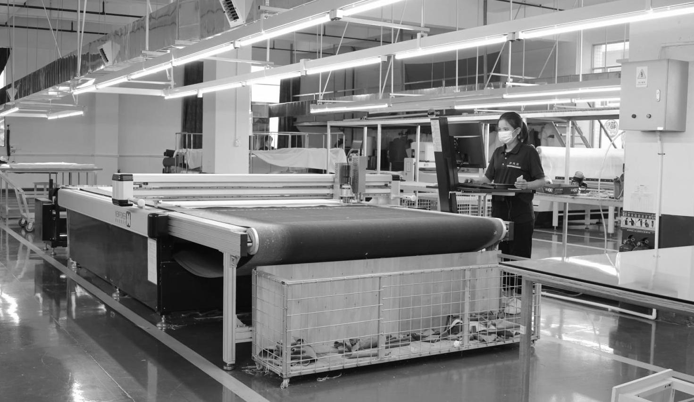

◯
自然触感亚麻、棉麻与木质肌理✧
舒适尺度从比例到坐感的反复推敲⌘
灵活组合让家具回应空间的变化◇
细致工艺用手工温度完善日常Collections
与日常相伴的作品
从沙发、单椅到床具与茶几，建立有温度的生活秩序。


Our Philosophy以自然为底色，
以自然为底色，
以舒适为尺度
萨玛尼家具 · 梵窝 VANVO，把对材质、比例与工艺的坚持，融入每一件作品。从原型的反复推敲，到面料的触感与包覆，让家具拥有值得相伴的日常质感。
- ✓二十余年专注高档精品软体家具设计与制造
- ✓以天然材质的肌理，保留生活真实的温度
- ✓以手工细节与舒适坐感，赋予作品持久价值
- ✓以模块组合与空间搭配，呈现各有性格的家
- 阅读品牌故事 →


Living Inspiration
生活，自有从容的形状
客厅、别墅、民宿与商业空间的家居搭配灵感。
Personal Service
四步，找到家的舒适尺度
1
聊聊生活
分享空间尺度、使用习惯与喜欢的质感。
2
搭配建议
围绕动线、比例、面料与色彩梳理选择。
3
确认配置
共同核对产品型号、规格与服务清单。
4
交付与相伴
配送安排与后续维护以确认方案为准。